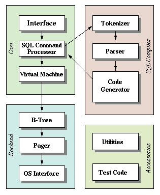
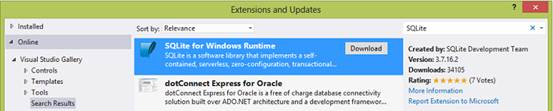
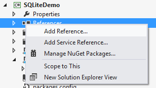
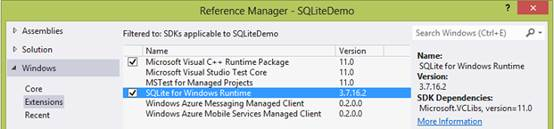
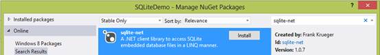
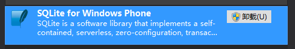
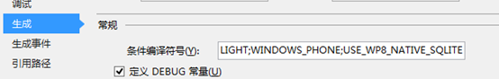
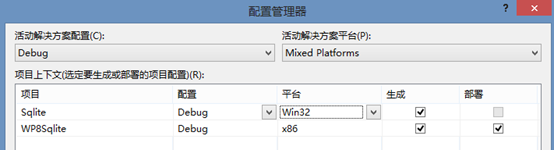
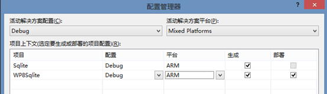

一、SQLite简介
SQLite 的网站 (sqlite.org) 对SQL进行了如下描述：“SQLite 是一个可实现独立、无服务器、零配置、事务性 SQL 数据库引擎的软件库”。这句话中的关键要素都围绕着“库”这一名词。与使用客户端程序集向服务器发送请求以供分析和执行的 SQL Server 不同的是，SQLite 完全驻留在客户端进程中，这使之成为一种“嵌入式”数据库。 在使用期间，SQLite 数据库的运行空间是一个存储在客户端文件系统的某一位置中的单个文件，并且安装空间通常也相当小。
尽管如此，SQLite 数据库的功能却是极其丰富的，因为它支持大部分 SQL-92 规范，只是去除了 RIGHT 和 FULL OUTER JOIN、ALTER TABLE、某一触发器支持、GRANT/REVOKE 以及写入 VIEW 等几项内容（更详细的说明请参见 SQLite 网站）。 令人印象深刻的是支持的功能数量，包括事务和各种数据类型。 虽然不加修改就将 SQL Server 数据库方案全盘迁移到 SQLite 是不足为信的，但有一点是合乎情理的，即在迁移非常简单（即未利用 SQL Server 特定的类型或功能）的方案时几乎不会遇到什么麻烦。 这使 SQLite 十分适合只需“轻型 SQL”的情形。
二、SQLite体系结构
SQLite的体系结构主要由接口、SQL命令处理器、虚拟机组成，当然其中也包括必要的测试代码与工具代码，他们之间的关系可以简单的用下图表现：

各部分的功能为：
l 接口
虽然也有部分实现散落在其他文件夹中以便可以访问到他们所需的数据结构，但大部分的公共接口SQLite库的方法是在main.c,legacy.c以及vdbeapi.c中实现的。同时，为避免与其他软件命名冲突，SQLite的所有外部符号都以sqlite3前缀开始。
l 标记生成器
当要执行一个包含SQL语句的字符串，接口将该字符串符号传给标记生成器。标记生成器的工作就是要打破原来的字符串成标记，并将这些标记传递给解析器。
l 解析器
解析器是一块基于标记内容的令牌。SQLite的解析器由 Lemon LALR(1)语法解析器生成，Lemon LALR(1)语法解析器与YACC / BISON，做同样的工作，但它使用了不同的输入语法，使得不容易出错，与此同时，Lemon还生成一个解析器，这是可重入和线程安全的。并且，Lemon定义了非终端的析构函数的概念，因此它不会泄露内存时遇到语法错误。
l 代码生成器
当解析器组装成完整的SQL语句的令牌后，它会调用代码生成器来生成虚拟机代码（SQL语句请求）。
l 虚拟机
由代码生成器生成的程序是由虚拟机执行。在虚拟机实现一个专门设计的操作数据库文件的摘要的计算引擎，另外，虚拟机具有用于中间存储栈。每个指令包含操作码和最多三个额外的操作数。
l B-树
SQLite数据库保持在磁盘上发现btree.c源文件使用一个B-tree实现。一个单独的B-树是用于在数据库中的每个表和索引。所有的B树存储在同一个磁盘文件中。文件格式的详细信息被记录在一个大的评论在btree.c的开头。
l 页面缓存
B-树的模块要求在固定大小的块从磁盘信息。缺省块大小为1024字节，但也可能在512和65536字节之间。页面缓存负责，读，写和缓存这些块。页面缓存还提供了回滚和原子提交的抽象和保护锁定的数据库文件。B-树的驱动程序请求特定页面的页面缓存页面缓存和通知，当它想修改页面或提交或回滚的变化。页面缓存确保的要求迅速处理，安全，有效地处理所有繁琐的细节。
l OS界面
为了提供POSIX和Win32的操作系统之间的可移植性，SQLite使用一个抽象层与操作系统的接口，即OS界面。
l 工具代码
工具代码的主要工作是：内存分配、不区分大小写比较、维护符号映射表、Unicode转换、打印以及随机数发生器。
l 测试代码
如果算上回归测试脚本中，超过半数的代码经过了基于的SQLite库的专门测试。
三、加入SQLite
IOS & Android
IOS
因为sqlite是c语言写的，objective-c可以直接引用sqlite的库：
{kind=link}
选择sqlite库：
{kind=link}
Android
Android 在运行时（run-time）集成了 SQLite，所以每个 Android 应用程序都可以使用 SQLite 数据库。
Windows应用商店应用
安装
1. 在 Microsoft Visual Studio 中的“工具”菜单上，单击“扩展和更新”。
2. 展开“联机”。如果尚未选择“Visual Studio 库”，请单击它。
3. 在“搜索 Visual Studio 库”框中，键入“SQLite”""。
4. 单击“用于 Windows 运行时的 SQLite”旁的“下载”，如下所示。

5. 单击“安装”。
6. 重新启动 Visual Studio。
引用
安装用于 Windows 运行时的 SQLite 包后，在 Visual Studio 中从 Windows 应用商店应用项目设置对它的引用：
1. 当应用的项目在 Visual Studio 中打开时，在“解决方案资源管理器”窗口中，右键单击“引用”文件夹，然后单击“添加引用”，如下所示。

2. 展开“Windows”，并单击“扩展”。
3. 选中“Microsoft Visual C++ 运行时包”和“用于 Windows 运行时的 SQLite”框（如下所示），并单击“确定”。

注意，添加这些引用后，应用的项目可能不会构建或运行。若要修复此问题，请在 Visual Studio 中的“构建”菜单上，单击“配置管理器”。在“活动解决方案平台”框中，单击你的特定目标平台，如“ARM”、“x64”或“x86”。然后单击“关闭”。
获取帮助程序库
在开始编写代码之前，你可能希望安装 SQLite 帮助程序库来简化你的编码工作。提供了许多此类帮助程序库。例如，可以安装 sqlite-net 库。以下是获取该库的方法：
1. 当应用的项目仍然在 Visual Studio 中打开时，在“解决方案资源管理器”窗口中，右键单击“引用”文件夹，然后单击“管理 NuGet 包”。如果你没有看到“管理 NuGet 包”，以下是解决方法：
a. 在 Visual Studio 的“工具”菜单上，单击“扩展更新”。
b. 展开“联机”。如果尚未选定“Visual Studio 库”，请单击它。
c. 在“搜索 Visual Studio 库”框内，键入“NuGet”。
d. 在“NuGet 包管理器”旁，单击“下载”。
e. 单击“安装”。
f. 重新启动 Visual Studio。
g. 如果应用的项目没有自动打开，请将其打开。
h. 请重试：在“解决方案资源管理器”窗口中，右键单击“引用”文件夹，然后单击“管理 NuGet 包”。
2. 展开“联机”。
3. 在“联机搜索”框中，键入“sqlite-net”。
4. 在“sqlite-net”旁，单击“安装”，如下所示。

5. 单击“关闭”。
注意，NuGet 是一种 Visual Studio 扩展，使你可以更轻松地在 Visual Studio 中安装和更新第三方的库和工具。若要了解有关 NuGet 的详细信息，请参阅 NuGet 库。
熟悉 NuGet 后，你会发现可以更轻松地使用 NuGet 的命令行版本。要在 Visual Studio 中使用它，请在“工具”菜单上单击“库程序包管理器”>“程序包管理器控制台”
Windows Phone 8
安装
1. 在 Microsoft Visual Studio 中的“工具”菜单上，单击“扩展和更新”。
2. 展开“联机”。如果尚未选择“Visual Studio 库”，请单击它。
3. 在“搜索 Visual Studio 库”框中，键入“SQLite”""。
4. 单击“用于 Windows 运行时的 SQLite”旁的“下载”，如下所示。

5. 单击“安装”。
重新启动 Visual Studio。
引用
同Windows应用商店应用程序
获取帮助程序库
同Windows应用商店应用程序
添加用于Windows Phone 8 的封装
要在Windows Phone 8 解决方案中使用SQLite数据库，需要从GitHub上下载sqlite-net-wp8的C++原生工程加入都解决方案中，sqlite-net-wp8里封装了一些方法供sqlite-net调用，下载链接如下：
https://github.com/peterhuene/sqlite-net-wp8
添加条件编译符号
右击Phone 8工程选择“属性”，在“生成”选项卡下的条件编译符号框中增加USE_WP8_NATIVE_SQLITE，如下图所示：

注意事项
1. 由于Windows Phone 8之前的Windows Phone版本不支持原生C++代码，所以以上方法只适用于Windows Phone 8 工程。
2. 添加完sqlite-net-wp8原生工程后，将无法面向Any CPU平台生产解决方案，请根据需要，在配置管理器中设置面向平台为Win32（模拟器）或ARM（真机）。
使用模拟器调试时的配置：

使用真机调试时的配置：

3. 由于sqlite-net-wp8工程基于特定sqlite版本，所以当Visual Studio的sqlite推出新的版本时，请确定Git上sqlite-net-wp8也作了相应的升级，之后再更新sqlite扩展与原生工程，如果二者的版本不匹配将导致无法加载原生工程。
四、使用SQLite
创建表
对于此示例，我们假设你的 Windows 应用商店应用使用博客文章。这些博客文章在 SQLite 数据库表中以记录的形式表示。使用你安装的 sqlite-net 包，可以通过为代表每篇博客文章的类进行编码来定义表。在此案例中，每篇博客文章都具有唯一的 ID、标题以及文章的文本，如下所示。
public class Post
{
[PrimaryKey]
public int Id { get; set; }
public string Title { get; set; }
public string Text { get; set; }
}PrimaryKey 属性在 sqlite-net 包中进行定义。
定义表后，可以使用如下代码创建该表。
private async void CreateTable()
{
SQLiteAsyncConnection conn = new SQLiteAsyncConnection("blog");
await conn.CreateTableAsync();
} SQLiteAsyncConnection 方法的 "blog" 参数可以指定 SQLite 数据库的路径。
CreateTableAsync 方法的类型对应类型为 Post 的表，此表之前已作为类进行编码。
public void onCreate(SQLiteDatabase db) {
db.execSQL("CREATE TABLE Post ( Id INTEGER PRIMARY KEY, Title TEXT, Text TEXT )");
}IOS中对应的方法：
char *errorMsg;
const char *createSql="create table if not exists persons (id integer primary key autoincrement,name text)";
if (sqlite3_exec(database, createSql, NULL, NULL, &errorMsg)==SQLITE_OK) {
NSLog(@"create ok.");
}创建记录
创建表后，你可以使用如下代码为它添加记录。
public async void InsertPost(Post post)
{
SQLiteAsyncConnection conn = new SQLiteAsyncConnection("blog");
await conn.InsertAsync(post);
}public void insertPost(SQLiteDatabase db, String title, String text ) {
ContentValues values = new ContentValues();
values.put("Title", title);
values.put("Text", text);
long newRowId;
newRowId = db.insert("Post", null, values);
}IOS中对应的方法：
const char *insertSql="insert into persons (name) values(‘张三’)";
if (sqlite3_exec(database, insertSql, NULL, NULL, &errorMsg)==SQLITE_OK) {
NSLog(@"insert ok.");
}删除记录
若要删除记录，请使用如下代码。
public async void DeletePost(Post post)
{
SQLiteAsyncConnection conn = new SQLiteAsyncConnection("blog");
await conn.DeleteAsync(post);
}Android中对应的方法：
public void deletePost(SQLiteDatabase db, Integer id ) {
String selection = "Id LIKE ?";
String[] selelectionArgs = { String.valueOf(id) };
db.delete("Post", selection, selectionArgs);
}更新记录
若要更新记录，请使用如下代码。
public async void UpdatePost(Post post)
{
SQLiteAsyncConnection conn = new SQLiteAsyncConnection("blog");
await conn.UpdateAsync(post);
}Android中对应的方法：
public void updatePost(SQLiteDatabase db, Integer id, String title, String text ) {
ContentValues values = new ContentValues();
values.put("Title", title);
values.put("Text", text);
String selection = "Id LIKE ?";
String[] selelectionArgs = { String.valueOf(id) };
int count = db.update(
"Post,
values,
selection,
selectionArgs);
}读取记录
若要读取单个记录，请使用如下代码。
public async Task GetPost(int id)
{
SQLiteAsyncConnection conn = new SQLiteAsyncConnection("blog");
var query = conn.Table().Where(x => x.Id == id);
var result = await query.ToListAsync();
return result.FirstOrDefault();
} Android中对应的方法：
public Cursor getPost(SQLiteDatabase db, Integer id){
String[] projection = {"Id", "Title", "Text" };
String selection = "Id LIKE ?";
String[] selelectionArgs = { String.valueOf(id) };
Cursor c = db.query(
"Post",
projection,
selection,
selectionArgs,
null,
null,
null
);
return c;
}IOS中对应的方法：
const char *selectSql="select id,name from persons";
sqlite3_stmt *statement;
if (sqlite3_prepare_v2(database, selectSql, -1, &statement, nil)==SQLITE_OK) {
NSLog(@"select ok.");
}
while (sqlite3_step(statement)==SQLITE_ROW) {
int _id=sqlite3_column_int(statement, 0);
NSString *name=[[NSString alloc] initWithCString:(char *)sqlite3_column_text(statement, 1) encoding:NSUTF8StringEncoding];
NSLog(@"row>>id %i, name %@",_id,name);
}
sqlite3_finalize(statement);若要读取所有记录，请使用如下代码。
public async Task> GetPosts()
{
SQLiteAsyncConnection conn = new SQLiteAsyncConnection("blog");
var query = conn.Table();
var result = await query.ToListAsync();
return result;
} Android中对应的方法：
public Cursor getPosts(SQLiteDatabase db){
String[] projection = { "Id", "Title", "Text" };
Cursor c = db.query(
"Post",
projection,
null,
null,
null,
null,
null
);
return c;
}五、另请参见
SQLite 编程（对比 Android 与 Windows 应用商店应用）
Working with SQLite in Windows Phone 8: a sqlite-net version for mobile